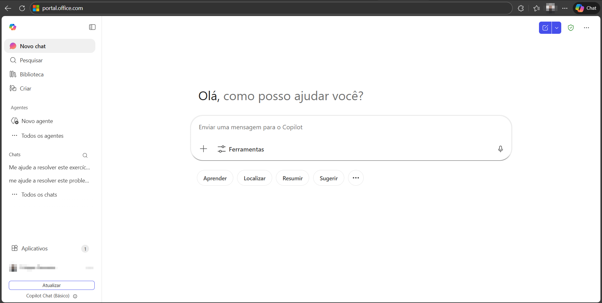
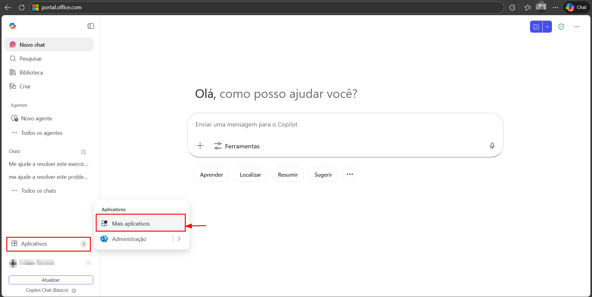
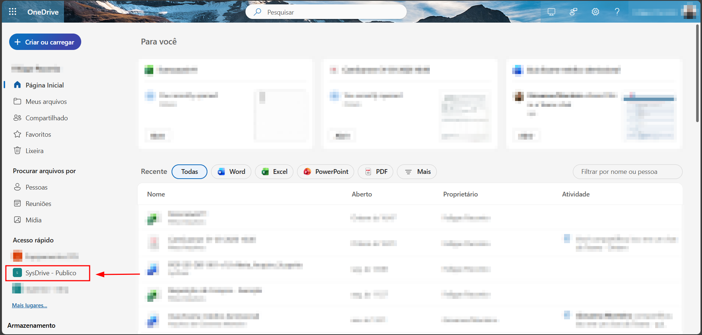
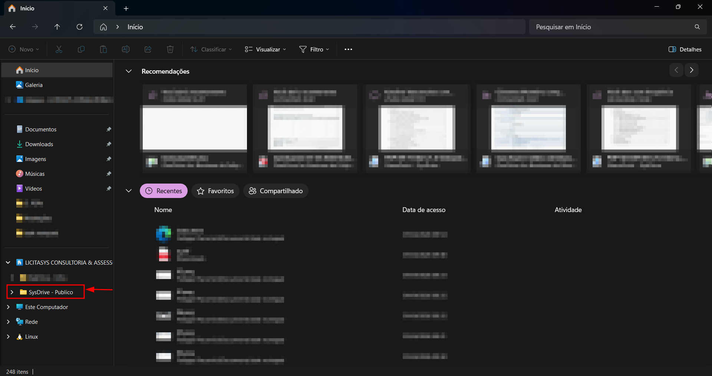

Como sincronizar uma pasta do
OneDrive em seu computador
Acesse seus arquivos corporativos diretamente pelo Explorador de Arquivos do Windows.
Este guia detalha os passos para sincronizar uma pasta do OneDrive com o seu computador, permitindo que você acesse os arquivos diretamente pelo Explorador de Arquivos do Windows. As alterações feitas localmente serão sincronizadas automaticamente com a nuvem.
Acessar o Portal Microsoft 365
Em seu navegador, acesse o site abaixo e faça login com seu e-mail corporativo e sua senha.

Acessar os Aplicativos
Na barra lateral esquerda do portal, clique em "Aplicativos". Em seguida, clique em "Mais aplicativos" para visualizar todos os aplicativos disponíveis.

Abrir o OneDrive
Na tela de aplicativos, localize e clique no ícone do OneDrive.

Escolher a pasta que deseja sincronizar
Na parte lateral esquerda do site do OneDrive, localize a seção "Acesso rápido". Escolha e clique na pasta que você deseja sincronizar com o seu computador.

Iniciar a sincronização
Com a pasta aberta, clique no ícone de três pontinhos (⋯) localizado na barra superior direita da página. No menu suspenso que aparecerá, clique na opção "Sincronizar".

Confirmar a abertura do OneDrive
O navegador exibirá uma janela de confirmação com a mensagem: "Este site está tentando abrir o Microsoft OneDrive". Clique em "Abrir" para autorizar a sincronização.
Aguarde alguns instantes enquanto o sistema sincroniza os arquivos. Uma mensagem informando "Estamos sincronizando seus arquivos" será exibida. Você pode clicar em "Fechar" — a sincronização continuará em segundo plano.

Pronto!
Sua pasta já está sincronizada e pode ser acessada diretamente pelo Explorador de Arquivos do Windows. Os arquivos serão mantidos atualizados automaticamente sempre que houver conexão com a internet.

📋 Observações
Em caso de dúvidas ou problemas
durante o processo, entre em contato
com a equipe de Service Desk (servicedesk@sysevolution.com.br).